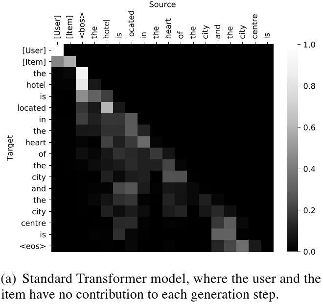
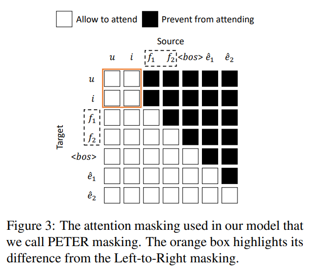
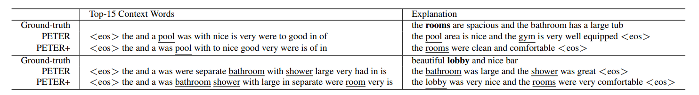
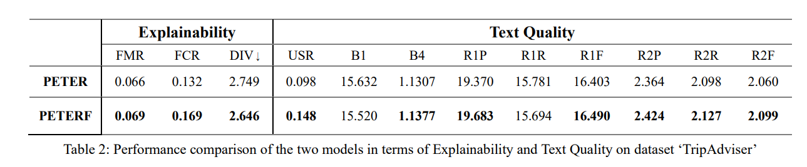

前言：
本篇博客的目的是详细总结 “Personalized Transformer for Explainable Recommendation” 这篇论文，并复现其论文中提及的个性化 Transformer 架构（基于作者的开源代码），并给出代码解读。
除此之外，笔者自以为发现了论文中的一处不足，并尝试对原论文的训练方法进行改进，该尝试最终并没有取得了更好的结果，并据此实验结果，笔者尝试给出了合理解释但没有成功，仅作为笔者熟悉论文过程中的一件轶事。
论文解读：
1. 概论
该篇论文出自 ACL'21，主要贡献是将推荐系统“个性化”的思想推广至 NLP 大模型领域。
在推荐任务中，用户和产品的 ID 在实现个性化的过程中起到了身份辨识的作用。Transformer 拥有强大的语言建模能力，但它却不够个性化，并且难以利用这些ID， 因为ID和文字完全不在同一个语义空间上 。过去的工作通常是将 ID token 替换为离散的文本表示（例如提供某些属性词），但离散的特征似乎不能完整地描述某件事物，而且这种特征不能被学习。
为了解决这个问题，作者在可解释推荐这个课题上提出了一种个性化 Transformer（PErsonalized Transformer for Explainable Recommendation，简称 PETER ），用来做基于 ID 的个性化推荐解释任务（即 “Explanation Generation”）。
为了赋予 ID 以语言学含义，作者设计了一个简单并且有效的任务，即利用ID来预测需要被生成的解释中的单词（即 “Context Prediction”），在二者的语义空间中形成映射关系。
除了生成解释外，借用 “Rating Prediction” 的任务，PETER还可以做推荐，从而有效地统一了推荐和解释两大任务。尽管 PETER 模型规模很小并且没有经过预训练，但是在性能和效率上均优于经过微调的BERT，凸显出设计的重要性。
2. 难点
作者首先尝试将 UserID 与 ItemID 作为一个 Token 对，直接放到 Transformer 里硬 train，但就结果而言是失败的 — — 序列生成完全不会关注这个 Token 对的信息（可以通过 Attention 矩阵观察而得，两个 ID 完全不造成贡献）。

论其原因，作者给出了以下解释：
试想在某宝某东这样的电商平台，用户数量和产品数量得上亿，但是用户写的点评里也就三千种常用的汉字，这使得 ID 和单词出现的频率非常不匹配（前者频率低，后者频率高），导致模型将 ID 视作词表外的词（OOV token），因此模型对ID完全不敏感。
因此，作者设计出 “Context Prediction” 这样的任务，即：用产品 ID （用户 ID 亦可）对应的向量来预测需要被生成的单词（一次生成 N 个概率最大的），从而将 Token 向量映射至单词向量对应的语义空间中。
另外，用户可能会主动要求系统解释推荐的产品的某些特征，为了满足这样的需求，作者把这些特征拼接到ID后面来做生成（对应下图的可选位置），记作 PETER+，这样可以生成更有针对性的解释。
3. 模型结构
3.1 输入特征
作者在生成序列的开头加入了 User ID 以及 Item ID 这两个 token，并将 ID 与 Word 分别通过 Embedding 层，赋予他们不同的语义空间。对于 PETER+ 模型，还在序列前添加了若干特征 Token 引导生成对应的序列。
3.2 注意力掩码
The layer encodes the previous layer’s output into .
经典的 Transforer 框架采用了一种 “Left-to-Right” 掩码，即每一位只能看到前面的位置。在 PETER 模型中，这做了一些小改动：对于开头的 User ID 和 Item ID，二者可以相互 attend，从而便于做评分预测以及上下文预测的任务。

3.3 任务设计
正如开头概论所说，PETER 借由三个任务完成训练。对于不同任务，作者采用了类似的训练策略。
- 解释生成：采用负对数似然（NLL）作为损失函数，并采用贪婪解码的方式生成对应长度的文本。
- 上下文预测：同样采用负对数似然的方式，将 Item ID 与对应的评论文本作为数据集进行训练，使得可以根据生成序列中 Item 的对应位置，预测出相联系的 个词汇。
- 评分预测：根据两个 tokenID，预测出对应的评分 . 具体做法就是把 UserID 对应位置的矢量丢到 MLP 里硬 train，损失函数选 MSE。

代码复现：
在尝试自己修改 Transformer 架构复现论文后，笔者发现真正困难的是从零开始造各种轮子。遂求助于论文作者在 Github 上发布的源码，才发现原来已经有各种封装好的类可供使用了。
1. 模型实现
不同于 Transformer 的 Encoder-Decoder 架构，PETER 采用的是 Only Encoder 架构，并且该模型未经过预训练，且叠的层数很少，只需要两层便可做到非常好的结果。参考 module.py。
1.1 EncoderLayer 类
用以封装 Encoder 中的单独一层，包含了多头注意力层以及前馈神经网络层，其中多头注意力机制可以直接调库使用。如果参考斯坦福的 Transformer 教程，自己实现多头注意力的话可以封装得更好看（即一层蕴含两个子层），但原理是一样的。
class EncoderLayer(nn.Module):
def __init__(self, d_model, nhead, dim_feedforward=2048, dropout=0.1, activation="relu"):
super(EncoderLayer, self).__init__()
self.self_attn = nn.MultiheadAttention(d_model, nhead, dropout=dropout)
# Implementation of Feedforward model
self.dropout = nn.Dropout(dropout)
self.linear1 = nn.Linear(d_model, dim_feedforward)
self.linear2 = nn.Linear(dim_feedforward, d_model)
self.norm1 = nn.LayerNorm(d_model)
self.norm2 = nn.LayerNorm(d_model)
self.dropout1 = nn.Dropout(dropout)
self.dropout2 = nn.Dropout(dropout)
self.activation = _get_activation_fn(activation)
def __setstate__(self, state):
if 'activation' not in state: state['activation'] = func.relu
super(EncoderLayer, self).__setstate__(state)
def forward(self, src: Tensor, src_mask: Optional[Tensor] = None, src_key_padding_mask: Optional[Tensor] = None) -> Tuple[Tensor, Tensor]:
# First is multiheadedattention with resiual.
src2, attn = self.self_attn(src, src, src, attn_mask=src_mask,
key_padding_mask=src_key_padding_mask)
src = self.norm1(src + self.dropout1(src2))
# Second is Feedforward with resiual.
src2 = self.linear2(self.dropout(self.activation(self.linear1(src))))
src = self.norm2(src + self.dropout2(src2))
return src, attn
1.2 Encoder 层
将 nlayer 个 EncoderLayer 类对象进行串联。
class TransformerEncoder(nn.Module):
__constants__ = ['norm']
def __init__(self, encoder_layer, num_layers, norm=None):
super(TransformerEncoder, self).__init__()
self.layers = _get_clones(encoder_layer, num_layers)
self.num_layers = num_layers
self.norm = norm
def forward(self, src: Tensor, mask: Optional[Tensor] = None, src_key_padding_mask: Optional[Tensor] = None) -> Tuple[Tensor, Tensor]:
output = src
attns = []
# Append all the layers one by one
for mod in self.layers:
output, attn = mod(output, src_mask=mask, src_key_padding_mask=src_key_padding_mask)
attns.append(attn)
attns = torch.stack(attns)
if self.norm is not None:
output = self.norm(output)
return output, attns
def _get_clones(module, N):
# Create N deepcopy of module
return nn.ModuleList([copy.deepcopy(module) for i in range(N)])
1.3 预测评分的 MLP 层
激活函数选用 Sigmoid 函数，比较典型，略去不谈。
1.4 PETER 模型类
将输入、Eocoder 模型以及输出部分整合起来的完整版。三个任务的训练函数、注意力掩码也在该类中实现。
class PETER(nn.Module):
def __init__(self, peter_mask, src_len, tgt_len, pad_idx, nuser, nitem, ntoken, emsize, nhead, nhid, nlayers, dropout=0.5):
super(PETER, self).__init__()
# emsize: word embedding size
self.pos_encoder = PositionalEncoding(emsize, dropout)
# nhid: dim_feedforward, one basic layer, including multi-head attention and FFN
encoder_layers = EncoderLayer(emsize, nhead, nhid, dropout)
# loop over the one above
self.transformer_encoder = TransformerEncoder(encoder_layers, nlayers)
# Embedding ID & words with different param.s
self.user_embeddings = nn.Embedding(nuser, emsize)
self.item_embeddings = nn.Embedding(nitem, emsize)
self.word_embeddings = nn.Embedding(ntoken, emsize)
# For generation/prediciton tasks
self.hidden2token = nn.Linear(emsize, ntoken)
self.recommender = MLP(emsize)
self.ui_len = 2 # UserID & ItemID
self.src_len = src_len # Including feature tokens
self.pad_idx = pad_idx
self.emsize = emsize
if peter_mask:
self.attn_mask = generate_peter_mask(src_len, tgt_len)
else:
self.attn_mask = generate_square_subsequent_mask(src_len + tgt_len)
self.init_weights()
def init_weights(self):
initrange = 0.1
self.user_embeddings.weight.data.uniform_(-initrange, initrange)
self.item_embeddings.weight.data.uniform_(-initrange, initrange)
self.word_embeddings.weight.data.uniform_(-initrange, initrange)
self.hidden2token.weight.data.uniform_(-initrange, initrange)
self.hidden2token.bias.data.zero_()
def predict_context(self, hidden):
# 下标为 1 表示 Item ID
context_prob = self.hidden2token(hidden[1]) # (batch_size, ntoken)
log_context_dis = func.log_softmax(context_prob, dim=-1)
return log_context_dis
def predict_rating(self, hidden):
# 下标为 0 表示 User ID
rating = self.recommender(hidden[0]) # (batch_size,)
return rating
def predict_seq(self, hidden):
# 根据评论序列（从 src_len 起）预测评论
word_prob = self.hidden2token(hidden[self.src_len:]) # (tgt_len, batch_size, ntoken)
log_word_prob = func.log_softmax(word_prob, dim=-1)
return log_word_prob
def generate_token(self, hidden):
word_prob = self.hidden2token(hidden[-1]) # (batch_size, ntoken)
log_word_prob = func.log_softmax(word_prob, dim=-1)
return log_word_prob
def generate_square_subsequent_mask(total_len):
mask = torch.tril(torch.ones(total_len, total_len))
# (total_len, total_len), lower triangle -> 1.; others 0.
mask = mask == 0 # lower -> False; others True
return mask
# 生成对应的 PETER 掩码
def generate_peter_mask(src_len, tgt_len):
total_len = src_len + tgt_len
mask = generate_square_subsequent_mask(total_len)
mask[0, 1] = False # allow to attend for user and item
return mask
def forward(self, user, item, text, seq_prediction=True,
context_prediction=True, rating_prediction=True):
device = user.device
batch_size = user.size(0)
total_len = self.ui_len + text.size(0)
# 使用 attn_mask 及 key_padding_mask 做注意力掩码
attn_mask = self.attn_mask[:total_len, :total_len].to(device) # (total_len, total_len)
left = torch.zeros(batch_size, self.ui_len).bool().to(device) # (batch_size, ui_len)
right = text.t() == self.pad_idx
# replace pad_idx with True and others with False, (batch_size, total_len - ui_len)
key_padding_mask = torch.cat([left, right], 1) # (batch_size, total_len)
# 对三个不同语义下的输入做 Embedding
u_src = self.user_embeddings(user.unsqueeze(0)) # (1, batch_size, emsize)
i_src = self.item_embeddings(item.unsqueeze(0)) # (1, batch_size, emsize)
w_src = self.word_embeddings(text) # (total_len - ui_len, batch_size, emsize)
src = torch.cat([u_src, i_src, w_src], 0) # (total_len, batch_size, emsize)
src = src * math.sqrt(self.emsize)
# 加上位置嵌入后开 train
src = self.pos_encoder(src)
hidden, attns = self.transformer_encoder(src, attn_mask, key_padding_mask)
# (total_len, batch_size, emsize) vs. (nlayers, batch_size, total_len_tgt, total_len_src)
# 做三个训练任务
if rating_prediction:
rating = self.predict_rating(hidden) # (batch_size,)
else:
rating = None
if context_prediction:
log_context_dis = self.predict_context(hidden) # (batch_size, ntoken)
else:
log_context_dis = None
if seq_prediction:
log_word_prob = self.predict_seq(hidden) # (tgt_len, batch_size, ntoken)
else:
log_word_prob = self.generate_token(hidden) # (batch_size, ntoken)
# 返回三个任务的推理结果，以及注意力矩阵
return log_word_prob, log_context_dis, rating, attns
2. 训练过程
包含了读取数据及批处理、模型构建及训练、以及最后的评估工作。参考 main.py。
2.1 读取数据
笔者这里选用的数据集是 TripAdvisor，收集自香港各大酒店的用户反馈，包含 UserID, ItemID, features, words 等信息。读取数据时就做做词嵌入、数据预处理（例如，加入 <bos> 与 <eos> 标签，输入长度的截取与补全）以及批处理。
print(now_time() + 'Loading data')
corpus = DataLoader(args.data_path, args.index_dir, args.vocab_size)
print("text: " + corpus.train[0]['text'])
print("filtered text: " + corpus.train[0]['filter'])
word2idx = corpus.word_dict.word2idx
idx2word = corpus.word_dict.idx2word
feature_set = corpus.feature_set
train_data = Batchify(corpus.train, word2idx, args.words, args.batch_size, shuffle=True)
val_data = Batchify(corpus.valid, word2idx, args.words, args.batch_size)
test_data = Batchify(corpus.test, word2idx, args.words, args.batch_size)
2.2 模型构建
敲定各种参数，以及选用对应的优化器（居然是 SGD 而非 Adam）以及损失函数。
# 各种参数
tgt_len = args.words + 1 # added <bos> or <eos>
ntokens = len(corpus.word_dict)
nuser = len(corpus.user_dict)
nitem = len(corpus.item_dict)
pad_idx = word2idx['<pad>'] # 空白占位符
# 读取模型
model = PETER(args.peter_mask, src_len, tgt_len, pad_idx, nuser, nitem, ntokens, args.emsize, args.nhead, args.nhid, args.nlayers, args.dropout).to(device)
# 损失函数以及优化器
text_criterion = nn.NLLLoss(ignore_index=pad_idx) # ignore the padding when computing loss
rating_criterion = nn.MSELoss()
optimizer = torch.optim.SGD(model.parameters(), lr=args.lr)
scheduler = torch.optim.lr_scheduler.StepLR(optimizer, 1, gamma=0.25)
2.3 训练过程
def train(data):
# Turn on training mode which enables dropout.
model.train()
context_loss = 0.
text_loss = 0.
rating_loss = 0.
total_sample = 0
while True:
# (batch_size, seq_len), data.step += 1
user, item, rating, seq, filt, feature = data.next_batch()
batch_size = user.size(0)
user = user.to(device) # (batch_size,)
item = item.to(device)
rating = rating.to(device)
seq = seq.t().to(device) # (tgt_len + 1, batch_size)
feature = feature.t().to(device) # (1, batch_size)
if args.use_feature:
text = torch.cat([feature, seq[:-1]], 0) # (src_len + tgt_len - 2, batch_size)
else:
text = seq[:-1] # (src_len + tgt_len - 2, batch_size)
# Starting each batch, we detach the hidden state from how it was previously produced.
# If we didn't, the model would try backpropagating all the way to start of the dataset.
optimizer.zero_grad()
log_word_prob, log_context_dis, rating_p, _ = model(user, item, text) # (tgt_len, batch_size, ntoken) vs. (batch_size, ntoken) vs. (batch_size,)
context_dis = log_context_dis.unsqueeze(0).repeat((tgt_len - 1, 1, 1)) # (batch_size, ntoken) -> (tgt_len - 1, batch_size, ntoken)
c_loss = text_criterion(context_dis.view(-1, ntokens), seq[1:-1].reshape((-1,)))
r_loss = rating_criterion(rating_p, rating)
t_loss = text_criterion(log_word_prob.view(-1, ntokens), seq[1:].reshape((-1,)))
loss = args.text_reg * t_loss + args.context_reg * c_loss + args.rating_reg * r_loss
loss.backward()
# `clip_grad_norm` helps prevent the exploding gradient problem.
torch.nn.utils.clip_grad_norm_(model.parameters(), args.clip)
optimizer.step()
context_loss += batch_size * c_loss.item()
text_loss += batch_size * t_loss.item()
rating_loss += batch_size * r_loss.item()
total_sample += batch_size
if data.step == data.total_step:
break
改进尝试：
1. 思想简述
笔者在阅读论文的过程中，注意到论文作者给出的推理样例如下：

从样例中可以看出，PETER 模型确实可以通过生成 Context 与 Explanation，为 User-Item 的 Token 对赋予语义学信息，并能根据 ID 信息实现一定程度的个性化（参考样例中的下划线特征）。
然而笔者发现，在 “Context Prediction” 任务中，大量的预测词汇不具有实际含义，例如 the, and, a…… 这些词频繁地出现在语料中，才以较高的概率成为被预测的上下文。但是这种预测显然不符合 “赋予 ID 以语义学信息” 的任务目的。
作者显然也意识到了这个问题，他据此提出 PETER+ ，通过引入特征，指导模型的生成任务。作者在论文中指出：
Admittedly, there is still much room for improvement of the context prediction task, so as to more accurately predict the features in the ground-truth (e.g., rooms vs. pool in the first example).
但笔者认为可以通过一个更加简单粗暴的做法解决该问题：既然上下文的预测结果大都是频繁出现在语料中而无实意的词汇，那么只需对语料预处理的时候进行停用词筛选，并且在训练的过程中采用非停用词序列去优化上下文预测任务，便可以较好地规避停用词所造成的影响。
2. 代码修改
为了改进语料预处理流程，在其中加入停用词筛选这一步骤，我们需要对论文源代码中的 util.py 模块进行修改。我们先引入 nltk 包，并从中导入常见停用词列表：
import nltk
# 加载并导入停用词列表
nltk.download('stopwords')
stop_words = set(nltk.corpus.stopwords.words('english'))
# >> {'between', 'does', 'because', 'll', 'on', 'all', ...}
在 util.py模块中，我们找到加载数据集对应的方法如下：
# 将原评论序列中的单词转为词嵌入表示
def seq2ids(self, seq):
return [self.word_dict.word2idx.get(w, self.__unk) for w in seq.split()]
for review in reviews:
(fea, adj, tem, sco) = review['template']
data.append({'user': self.user_dict.entity2idx[review['user']],
'item': self.item_dict.entity2idx[review['item']],
'rating': review['rating'],
# 'text' 属性对应词嵌入后表示的矢量序列
'text': self.seq2ids(tem),
'feature': self.word_dict.word2idx.get(fea, self.__unk)})
if fea in self.word_dict.word2idx:
self.feature_set.add(fea)
else:
self.feature_set.add('<unk>')
现在我们尝试向数据集中添加一个 filtered_text 属性，表示经过停用词筛选后的评论文本序列。代码修改如下：
def seq2filtered_ids(self, seq):
# 仅当 w 不在停用词列表中，才将其加入序列
return [self.word_dict.word2idx.get(w, self.__unk)
for w in seq.split() if w not in stop_words]
# ... 前后代码无变化
'text': self.seq2ids(tem),
'filtered_text': self.seq2filtered_ids(tem),
# ... 前后代码无变化
在数据批处理的过程中，filtered_text字段必定小于等于原text字段，长度不足的地方我们用 <pad> 进行补齐。由于我们仅用该字段处理上下文预测任务的损失函数优化过程，因此 <bos> 和 <eos> 也非必须存在，可以为 <pad> 替代。
# Batchify 类用来对数据进行批处理
class Batchify:
def __init__(self, data, word2idx, seq_len=15, batch_size=128, shuffle=False):
bos = word2idx['<bos>']
eos = word2idx['<eos>']
pad = word2idx['<pad>']
u, i, r, t, tf, f = [], [], [], [], [], []
for x in data:
u.append(x['user'])
i.append(x['item'])
r.append(x['rating'])
# 训练文本序列应具有相同长度，因此需要截断或者用<pad>填充
t.append(sentence_format(x['text'], seq_len, pad, bos, eos))
#筛选文本序列仅用来优化上下文预测任务，只保留关键语义信息
tf.append(sentence_format(x['filtered_text'], seq_len, pad, pad, pad))
f.append([x['feature']])
在 main.py 中，我们只需将 “上下文预测” 任务代码中参照的原序列（seq），修改为经过筛选后的序列（filtered_seq）即可：
# 此处用来训练的语料为筛选后的序列
c_loss = text_criterion(context_dis.view(-1, ntokens), filtered_seq[1:-1].reshape((-1,)))
3. 实验结果
笔者将改进后的模型记为 PETERF（虽然模型结构本身没有改变，只是在训练方法上做了调整），并将其与原模型进行对比。各项指标对比如下：

如图可知，绝大多数指标有所提升，说明笔者的改进方法确实有利于模型训练。但笔者无法解释各项指标所对应的含义，所以也无法向读者说明改进方法具体从哪些方向改善了模型。
此外，尽管各指标均有所提升，但提升幅度极小，所以这项改进工作也可忽略不计。但这项任务本来就是笔者灵光乍现所尝试的，不确定是否具有实际意义。